Λογαριασμοί που ξέρουν πότε λήγουν, έσοδα, αποταμίευση, λίστες αγορών, συνταγές και τα οχήματά σου — μοιρασμένα με όλη την οικογένεια, στον δικό σου server.
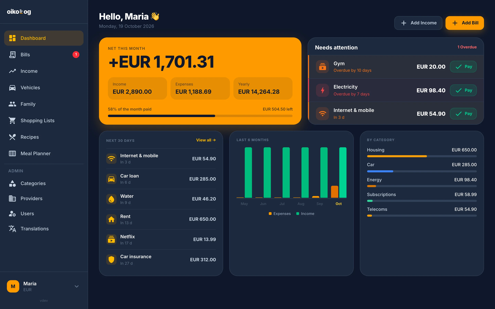
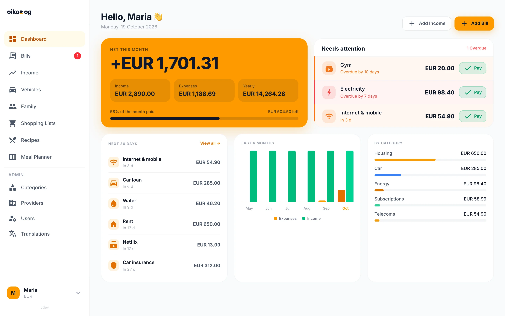
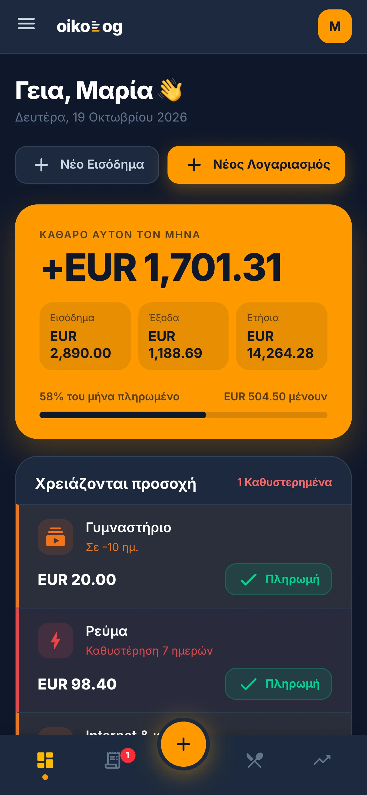
Πραγματικές οθόνες του Oikolog, με δεδομένα μιας φανταστικής οικογένειας.
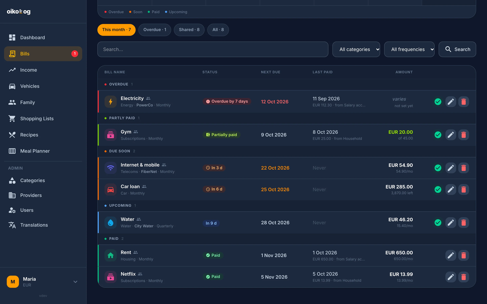
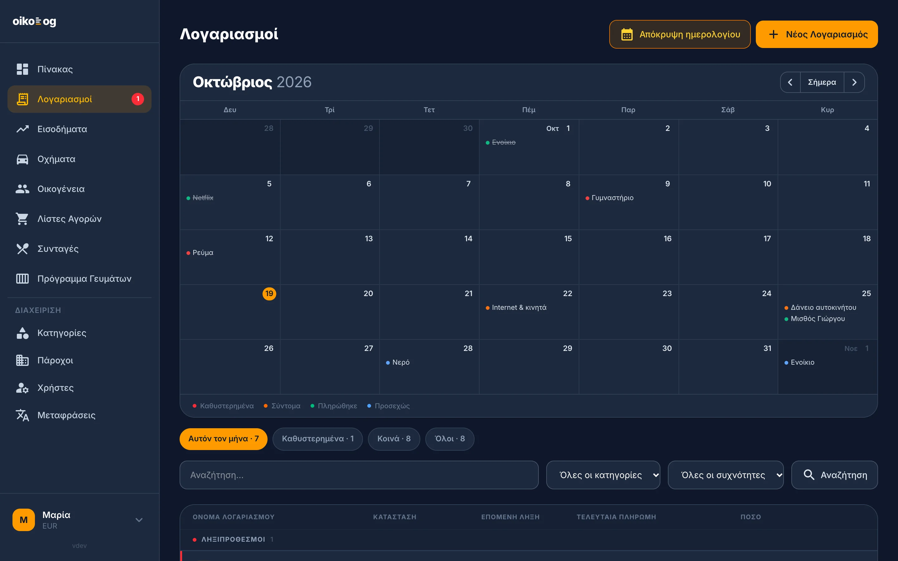
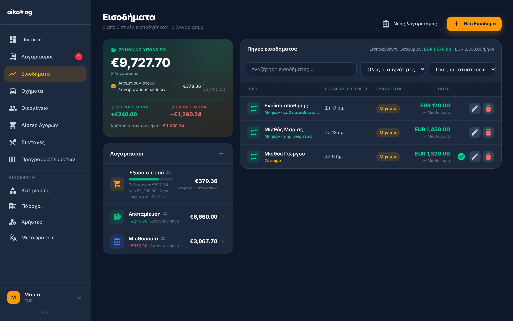
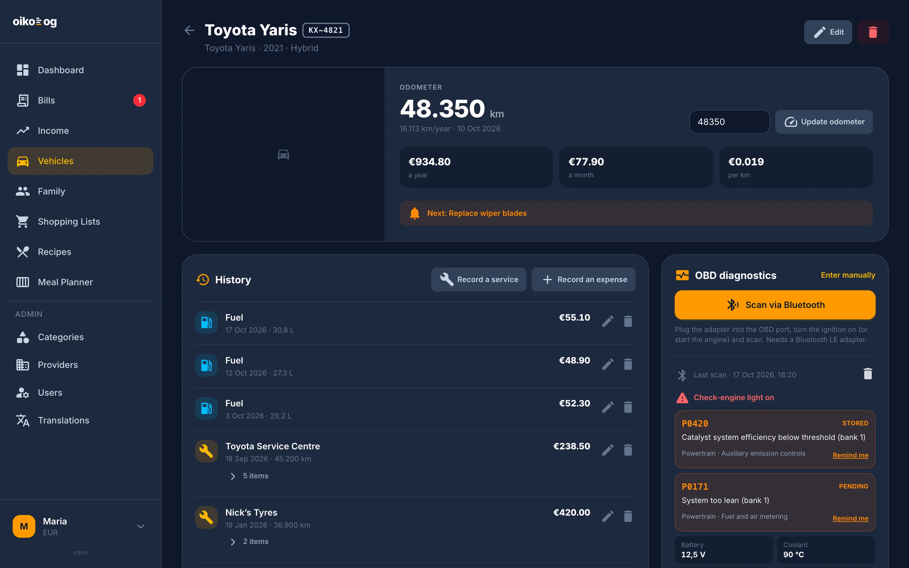
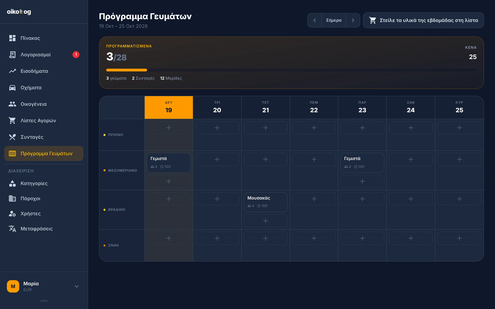
Από την ΔΕΗ μέχρι το σέρβις του αυτοκινήτου — κάθε υποχρέωση με ημερομηνία, ποσό και ιστορικό.
Επαναλαμβανόμενοι ή μία φορά, με αυτόματη επόμενη λήξη, μερικές πληρωμές και δάνεια με υπόλοιπο που μειώνεται σε κάθε πληρωμή.
Λογαριασμοί εξόδων με ποσό ανά κύκλο μισθοδοσίας — και ό,τι περισσέψει, μεταφέρεται με ένα κλικ στην αποταμίευση.
Μισθοδοσία και άλλα έσοδα που επιβεβαιώνεις όταν μπουν — με ένδειξη για το πόσο νωρίτερα ή αργότερα ήρθαν.
Συνδέεις Gmail ή Outlook και το Oikolog διαβάζει τα τιμολόγια των παρόχων, προτείνοντας το ποσό. Μόνο ανάγνωση.
Κοινόχρηστοι λογαριασμοί, κωδικός πρόσκλησης και ειδοποίηση στο κινητό όταν κάποιος πληρώσει.
Λίστες με ποσότητες, κατάλογος προϊόντων και σάρωση barcode με την κάμερα του κινητού, με διατροφικά στοιχεία.
Εισαγωγή συνταγών από URL και εβδομαδιαίο πρόγραμμα γευμάτων που στέλνει τα υλικά στη λίστα αγορών.
Χιλιόμετρα, υπενθυμίσεις σέρβις, ιστορικό εργασιών, κόστος ανά χιλιόμετρο — και διάγνωση OBD μέσω Bluetooth.
Φτιάχνεις μια οικογένεια και οι υπόλοιποι μπαίνουν με έναν κωδικό πρόσκλησης. Από εκεί και πέρα όλοι βλέπουν το ίδιο σπίτι.
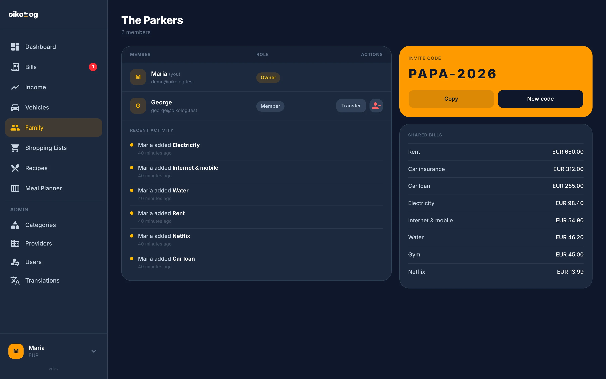
Δίνεις το link μιας συνταγής και το Oikolog τη διαβάζει από τη σελίδα: όνομα, φωτογραφία, μερίδες, χρόνοι, υλικά και βήματα — μαζί με τις ενότητές τους.
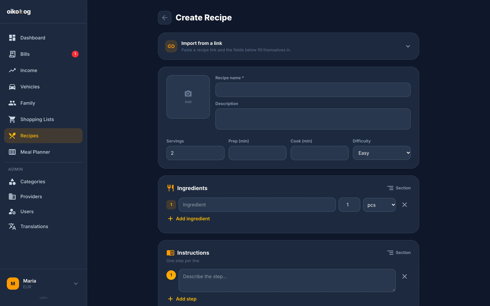
Λίστες με ποσότητες και μονάδες, που τσεκάρεις καθώς ψωνίζεις — και ένας κατάλογος προϊόντων που μεγαλώνει μαζί σου.
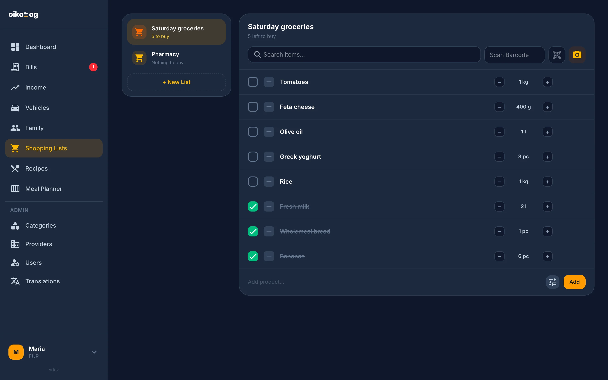
Πάνω από 50 ελληνικοί και διεθνείς πάροχοι έρχονται προεγκατεστημένοι, σε 16 κατηγορίες. Και όλα παραμετροποιούνται.
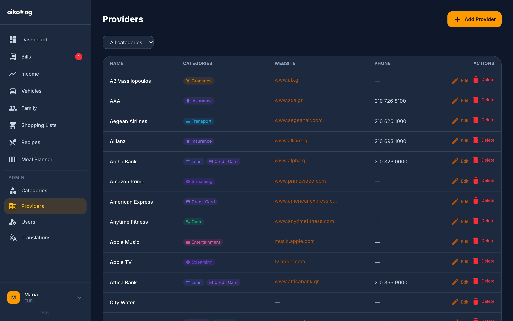
Εγκαθίσταται από τον browser ως PWA, με κάτω μπάρα πλοήγησης, ειδοποιήσεις και σκούρο θέμα — φτιαγμένο για να πληρώνεις έναν λογαριασμό στο πόδι.
Το Oikolog τρέχει στον δικό σου server, NAS ή VPS. Οι λογαριασμοί και οι πληρωμές σου δεν περνούν από κανέναν τρίτο.
Laravel, Alpine και Tailwind, υπό GPL-3.0. Διάβασε τον κώδικα, άνοιξε ένα issue ή στείλε ένα pull request.
Χρειάζεσαι μόνο Docker. Το image περιλαμβάνει την εφαρμογή έτοιμη· η βάση MySQL έρχεται με το compose.
Για NAS, HTTPS και ειδοποιήσεις, δες τον οδηγό Docker.
Άνοιξε το http://localhost:8000 και συνδέσου.
Το Oikolog είναι ανοιχτού κώδικα. Αν σου είναι χρήσιμο, ένα αστέρι στο GitHub βοηθάει να το βρουν κι άλλοι.